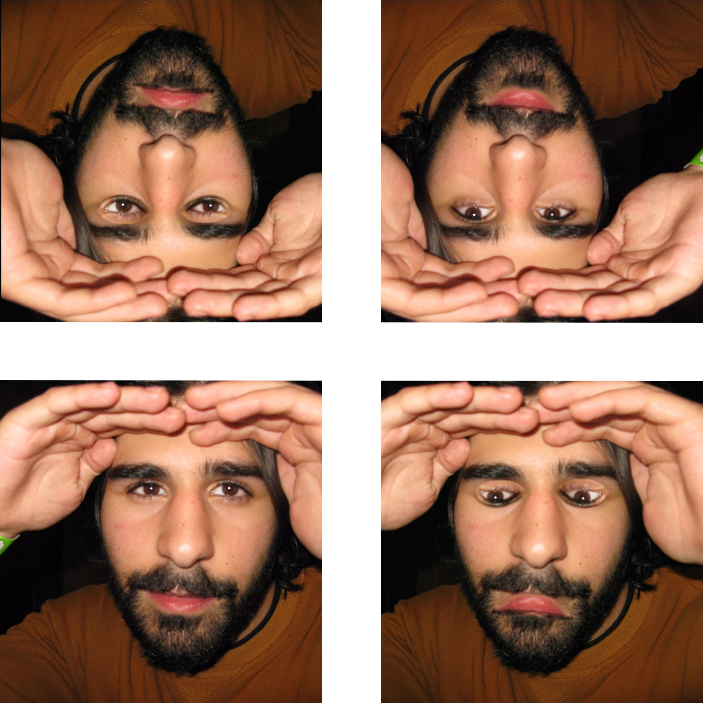
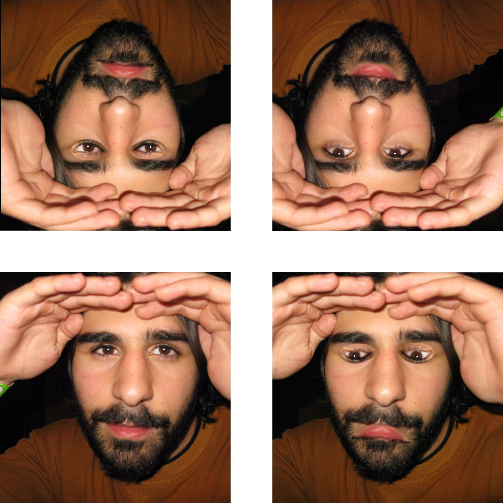

Jacob's Contributions to Film
The Pahlevan on Fifth Ave by Pranay Sanwal (2024)
Winner of 2024 NYU Sports Film Festival
Winner of 2024 Newburyport Documentary Film Festival
This film uncovers the story of an Iranian rug dealer on Fifth Avenue whose prolific career in the sport of wrestling is concealed beneath a veil of humility.
I wrote, played, recorded, and mixed the musical score of the Pahlevan on Fifth Ave
Water Under The Bridge (Miniseries) by 1716 Digital (2023)
Four suburban teens make a deadly mistake while filming a home movie, plunging them down a rabbit hole of paranoia & distrust and forcing them to confront their inevitable transition to adulthood./
"Water Under the Bridge" is a three-part miniseries shot across nearly six months in 2021 as a zero-budget production by high school student filmmakers in Charlottesville, Virginia. In addition to an instrumental score from composers Fox Pittman & Nick Bird, an original soundtrack was written and performed by Jacob Pellechia for the series.

.png) 
